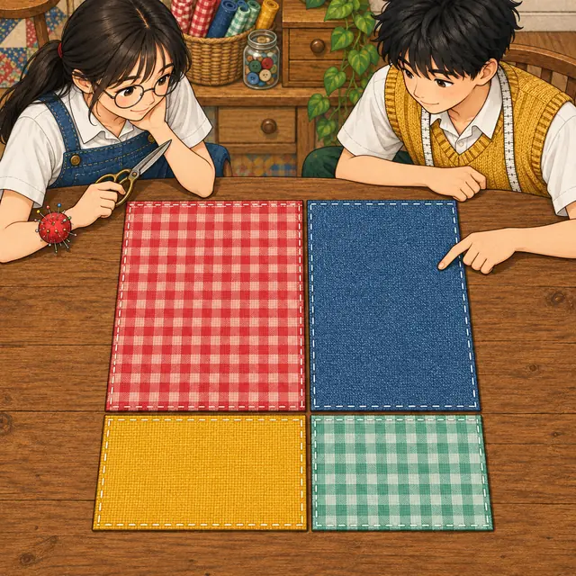
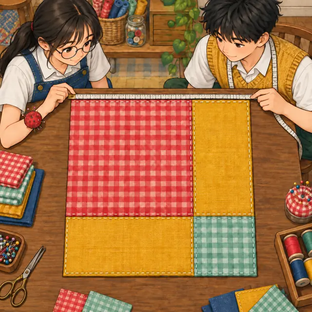
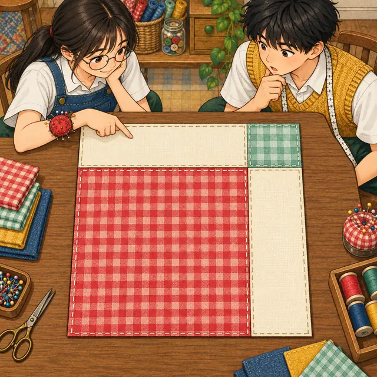
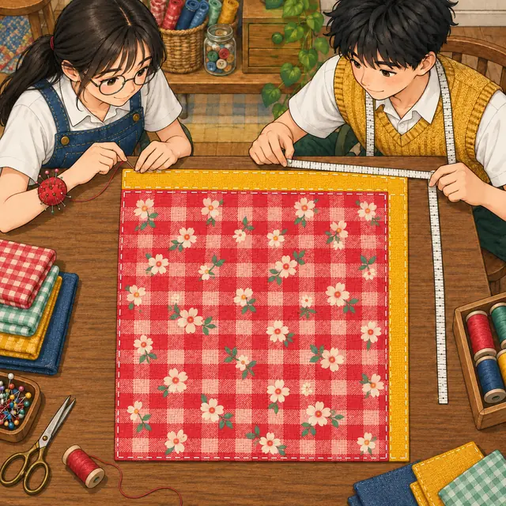
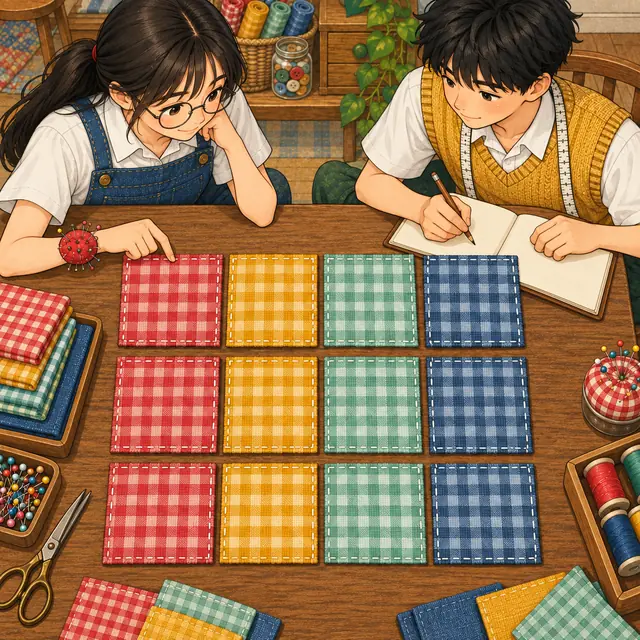

課前暖身漫畫：只要多買一小塊布？
小禾在拼布工坊做了一塊邊長 \(40\) 公分的正方形拼布，想把它加大成邊長 \(50\) 公分。她心想：「邊長多了 \(10\)，那就再買一塊 \(10 \times 10\) 的布補上去吧！」阿森把布攤在桌上一比，發現事情沒那麼簡單——到底還缺了哪些布？這一節學完和的平方公式，就能一眼看出來。
重點 1：分配律的面積模型——一塊布剪成四小塊
重點整理與敘述
- 七年級的分配律：\(a(b + c) = ab + ac\)、\(a(b - c) = ab - ac\)。長是 \(a\)、寬是 \((b + c)\) 的長方形，可以剪成 \(ab\) 與 \(ac\) 兩塊，面積加起來不變。
- 文字符號相乘：\(a \times b\) 寫成 \(ab\)，兩個文字並排就代表相乘；\(a \times a\) 寫成 \(a^2\)。因為乘法有交換律，\(ba\) 和 \(ab\) 是同一個數。
- 兩個括號相乘：長 \((a + b)\)、寬 \((c + d)\) 的大長方形，沿一直一橫兩條線剪開，得到甲、乙、丙、丁四塊：
| 小塊 | 直邊 | 橫邊 | 面積 |
|---|---|---|---|
| 甲 | \(a\) | \(c\) | \(ac\) |
| 乙 | \(a\) | \(d\) | \(ad\) |
| 丙 | \(b\) | \(c\) | \(bc\) |
| 丁 | \(b\) | \(d\) | \(bd\) |
- 用分配律也推得出來：先把 \((c + d)\) 看成一整塊，再各自分配一次： \[\begin{aligned} & (a + b)(c + d) \\ &= a(c + d) + b(c + d) \\ &= ac + ad + bc + bd \end{aligned}\]
- 前面括號的每一項，都要乘到後面括號的每一項：\(2 \times 2 = 4\) 項，一項都不能少。只寫「頭乘頭、尾乘尾」等於只算了甲、丁兩塊，乙、丙兩塊就不見了。

視覺互動探索：拼布切割台
選一種剪法，拉動各邊的長度。大長方形整塊算的面積，和剪開後每一小塊加起來的面積，是不是永遠一樣？
形成性評量 (分配律的面積模型)
Q1. 一塊長方形的布，直邊長 \((x + 5)\)、橫邊長 \((y + 2)\)。沿一直一橫兩條線把它剪成四塊小長方形，四塊的面積和為何？
解析：答案為 B。前面括號的每一項乘到後面括號的每一項：
\[\begin{aligned} & (x + 5)(y + 2) \\ &= xy + 2x + 5y + 10 \end{aligned}\]
四塊分別是 \(x \times y\)、\(x \times 2\)、\(5 \times y\)、\(5 \times 2\)。
A 錯：只算了「頭乘頭、尾乘尾」兩塊，漏掉 \(2x\) 與 \(5y\)。
C 錯：配錯對象，\(x\) 要乘的是 \(2\)、\(5\) 要乘的是 \(y\)。
D 錯：\(5\) 和 \(2\) 是兩條不同邊上的長度，不能直接相加。
Q2. 利用分配律展開 \((m + 3)(n - 2)\)，結果為何？
解析：答案為 A。把 \((n - 2)\) 看成一整塊，各分配一次：
\[\begin{aligned} & (m + 3)(n - 2) \\ &= m(n - 2) + 3(n - 2) \\ &= mn - 2m + 3n - 6 \end{aligned}\]
B 錯：\(m \times (-2) = -2m\)，負號不能丟。
C 錯：\(3 \times (-2) = -6\)，不是 \(+6\)。
D 錯：只乘了頭頭、尾尾，漏掉 \(-2m\) 與 \(3n\) 兩項。
重點 2：用分配律算數值——拆成整百再展開
重點整理與敘述
- 拆數的想法：把不好算的數拆成「整十、整百再加減一個小數字」，然後用 \((a + b)(c + d)\) 展開成四項，每一項都很好算。
- 例：\(99\) 可以看成 \(100 - 1\)、\(501\) 看成 \(500 + 1\)： \[\begin{aligned} & 99 \times 501 \\ &= (100 - 1)(500 + 1) \\ &= 100 \times 500 + 100 \times 1 \\ &\quad - 1 \times 500 - 1 \times 1 \\ &= 50000 + 100 - 500 - 1 \\ &= 49599 \end{aligned}\]
- 帶負號的那幾項要減掉：\((-1) \times 500 = -500\)、\((-1) \times 1 = -1\)。也可以先寫成 \([100 + (-1)](500 + 1)\)，再照四項乘開。
- 小數也能拆： \[\begin{aligned} & 9.9 \times 20.2 \\ &= (10 - 0.1)(20 + 0.2) \\ &= 200 + 2 - 2 - 0.02 \\ &= 199.98 \end{aligned}\]
- 不必死背公式：只要記得「拆開的每一部分都要互相乘到」，算完再用計算機驗算。
視覺互動探索：拆數乘法表
求兩數的乘積。調整兩個數，看它們怎麼拆成「整百 + 小數字」，再把四格乘積加起來（帶負號的格子要減掉）：
形成性評量 (用分配律算數值)
Q3. 把 \(49 \times 201\) 寫成 \((50 - 1)(200 + 1)\)，再利用分配律計算，結果為何？
解析：答案為 C。四項都要乘到：
\[\begin{aligned} & (50 - 1)(200 + 1) \\ &= 50 \times 200 + 50 \times 1 \\ &\quad - 1 \times 200 - 1 \times 1 \\ &= 10000 + 50 - 200 - 1 \\ &= 9849 \end{aligned}\]
A 錯：只算了 \(50 \times 200\) 與 \(-1 \times 1\)，漏掉中間兩項。
B 錯：\((-1) \times 200\) 應該是 \(-200\)，寫成 \(+200\) 會得到 \(10249\)。
D 錯：\((-1) \times 1\) 應該是 \(-1\)，寫成 \(+1\) 會得到 \(9851\)。
Q4. 利用分配律計算 \(4.9 \times 30.2\)，結果為何？
解析：答案為 D。把 \(4.9\) 看成 \(5 - 0.1\)、\(30.2\) 看成 \(30 + 0.2\)：
\[\begin{aligned} & (5 - 0.1)(30 + 0.2) \\ &= 150 + 1 - 3 - 0.02 \\ &= 147.98 \end{aligned}\]
A 錯：\((-0.1) \times 0.2 = -0.02\)，寫成 \(+0.02\) 會得到 \(148.02\)。
B 錯：\((-0.1) \times 30 = -3\)，寫成 \(+3\) 會得到 \(153.98\)。
C 錯：漏掉中間兩項 \(+1\) 與 \(-3\)，只算 \(150 - 0.02\)。
重點 3：和的平方公式——別忘了中間兩條布
重點整理與敘述
- 用面積看：邊長 \((a + b)\) 的大正方形，剪成一塊 \(a^2\)、兩塊 \(ab\)、一塊 \(b^2\)： \[\begin{aligned} (a + b)^2 &= a^2 + ab + ab + b^2 \\ &= a^2 + 2ab + b^2 \end{aligned}\]
- 用分配律看：\((a + b)^2\) 就是 \((a + b)(a + b)\)： \[\begin{aligned} & (a + b)(a + b) \\ &= a^2 + ab + ba + b^2 \\ &= a^2 + 2ab + b^2 \end{aligned}\]
- 用來算平方：把 \(504\) 看成 \(500 + 4\)，令 \(a = 500\)、\(b = 4\)： \[\begin{aligned} & 504^2 \\ &= 500^2 + 2 \times 500 \times 4 + 4^2 \\ &= 250000 + 4000 + 16 \\ &= 254016 \end{aligned}\]
- 怎麼拆都對，但整百最好算：\(504\) 也可以看成 \(498 + 6\)，算出來一樣是 \(254016\)，只是 \(498^2\) 本身就很難算。拆成「整十、整百 + 小數字」最省力。
- 最常見的錯：把 \((a + b)^2\) 寫成 \(a^2 + b^2\)。試一組數字就看得出來：\((5 + 1)^2 = 36\)，可是 \(5^2 + 1^2 = 26\)，少掉的 \(10\) 正是兩塊 \(5 \times 1\)。

視覺互動探索：正方形拼布台
「拼布」模式：拉動 \(a\)、\(b\)，數數大正方形由哪幾塊組成。「算平方」模式：選一個三位數，比較兩種拆法，看哪一種比較好算：
形成性評量 (和的平方公式)
Q5. 利用和的平方公式計算 \(403^2\)，結果為何？
解析：答案為 B。令 \(a = 400\)、\(b = 3\)：
\[\begin{aligned} & (400 + 3)^2 \\ &= 400^2 + 2 \times 400 \times 3 + 3^2 \\ &= 160000 + 2400 + 9 \\ &= 162409 \end{aligned}\]
A 錯：寫成 \(400^2 + 3^2\)，漏掉中間的 \(2ab\)。
C 錯：中間項少乘了 \(2\)，只加 \(400 \times 3 = 1200\)。
D 錯：\(3^2\) 是 \(3 \times 3 = 9\)，不是 \(3 \times 2 = 6\)。
Q6. 利用和的平方公式計算 \(30.2^2\)，結果為何？
解析：答案為 A。把 \(30.2\) 看成 \(30 + 0.2\)：
\[\begin{aligned} & (30 + 0.2)^2 \\ &= 30^2 + 2 \times 30 \times 0.2 + 0.2^2 \\ &= 900 + 12 + 0.04 \\ &= 912.04 \end{aligned}\]
B 錯：漏掉中間的 \(2ab = 12\)。
C 錯：中間項少乘了 \(2\)，只加 \(30 \times 0.2 = 6\)。
D 錯：\(0.2^2 = 0.04\)，不是 \(0.4\)。
重點 4：差的平方公式——角落被剪了兩次
重點整理與敘述
- 用面積看：從邊長 \(a\) 的大正方形，沿上邊和右邊各剪掉一條 \(a \times b\) 的長條，剩下邊長 \((a - b)\) 的正方形。
- 角落的小正方形被剪了兩次：兩條長條在角落重疊了一塊 \(b^2\)，減兩個 \(ab\) 就把它多減了一次，要再加回來： \[\begin{aligned} (a - b)^2 &= a^2 - ab - ab + b^2 \\ &= a^2 - 2ab + b^2 \end{aligned}\]
- 用分配律看： \[\begin{aligned} & (a - b)(a - b) \\ &= a^2 - ab - ba + b^2 \\ &= a^2 - 2ab + b^2 \end{aligned}\] 最後一項是 \((-b) \times (-b) = +b^2\)，負負得正。
- 用來算平方：把 \(199\) 看成 \(200 - 1\)： \[\begin{aligned} & 199^2 \\ &= 200^2 - 2 \times 200 \times 1 + 1^2 \\ &= 40000 - 400 + 1 \\ &= 39601 \end{aligned}\]
- 兩個符號要記牢：中間是 \(-2ab\)，最後是 \(+b^2\)。寫成 \(a^2 - b^2\) 或 \(a^2 - 2ab - b^2\) 都不對。
- 拆法也不唯一：\(199\) 看成 \(206 - 7\) 也算得出 \(39601\)，只是 \(206^2\) 不好算；靠近整百的數，拆成「整百 − 小數字」最省力。
視覺互動探索：裁邊工作台
「裁邊」模式：一步一步剪掉兩條長條，看角落的小正方形被減了幾次。「算平方」模式：選一個靠近 \(200\) 的數，比較兩種拆法：
形成性評量 (差的平方公式)
Q7. 利用差的平方公式計算 \(297^2\)，結果為何？
解析：答案為 C。令 \(a = 300\)、\(b = 3\)：
\[\begin{aligned} & (300 - 3)^2 \\ &= 300^2 - 2 \times 300 \times 3 + 3^2 \\ &= 90000 - 1800 + 9 \\ &= 88209 \end{aligned}\]
A 錯：寫成 \(300^2 - 3^2\)，把差的平方當成平方差。
B 錯：最後一項是 \(+3^2\)，寫成 \(-9\) 會得到 \(88191\)。
D 錯：中間項少乘了 \(2\)，只減 \(900\)。
Q8. 利用差的平方公式計算 \(9.8^2\)，結果為何？
解析：答案為 D。把 \(9.8\) 看成 \(10 - 0.2\)：
\[\begin{aligned} & (10 - 0.2)^2 \\ &= 10^2 - 2 \times 10 \times 0.2 + 0.2^2 \\ &= 100 - 4 + 0.04 \\ &= 96.04 \end{aligned}\]
A 錯：\(0.2^2 = 0.04\)，算成 \(0.4\) 會得到 \(96.4\)。
B 錯：最後一項是 \(+0.04\)，寫成減號會得到 \(95.96\)。
C 錯：寫成 \(10^2 - 0.2^2\)，把差的平方當成平方差。
重點 5：平方差公式——剪掉一角再拼回去
重點整理與敘述
- 剪拼實驗：從邊長 \(a\) 的大正方形，剪掉角落邊長 \(b\) 的小正方形，剩下的面積是 \(a^2 - b^2\)。
- 把剩下的 L 形剪成甲、乙兩塊，乙轉個方向接到甲的旁邊，剛好拼成長 \((a + b)\)、寬 \((a - b)\) 的長方形——面積沒有變，所以兩者相等。
- 用分配律看：中間兩項一正一負，剛好抵消： \[\begin{aligned} & (a + b)(a - b) \\ &= a^2 - ab + ba - b^2 \\ &= a^2 - b^2 \end{aligned}\]
- 用來算乘法：\(203\) 比 \(200\) 多 \(3\)、\(197\) 比 \(200\) 少 \(3\)，令 \(a = 200\)、\(b = 3\)： \[\begin{aligned} & 203 \times 197 \\ &= (200 + 3)(200 - 3) \\ &= 200^2 - 3^2 \\ &= 39991 \end{aligned}\]
- 什麼時候用得上：兩個數離同一個整數一樣遠，一個多、一個少。那個整數就是 \(a\)，離它多遠就是 \(b\)。
- 不是每一題都適合：\(99 \times 94\) 的中間數是 \(96.5\)、\(b = 2.5\)，套公式反而更麻煩，這時直接算就好。
視覺互動探索：剪拼重組台
「剪拼」模式：剪掉角落的 \(b^2\)，再把「重組進度」拉到底，看乙塊怎麼轉過去拼成長方形。「算乘法」模式：兩數一個多、一個少，用平方差公式算乘積：
形成性評量 (平方差公式)
Q9. 利用平方差公式計算 \(405 \times 395\)，結果為何？
解析：答案為 B。兩數離 \(400\) 一樣遠，令 \(a = 400\)、\(b = 5\)：
\[\begin{aligned} & (400 + 5)(400 - 5) \\ &= 400^2 - 5^2 \\ &= 160000 - 25 \\ &= 159975 \end{aligned}\]
A 錯：最後一項是 \(-b^2\)，寫成 \(+25\) 會得到 \(160025\)。
C 錯：用成差的平方 \(400^2 - 2 \times 400 \times 5 + 5^2\)，那是 \(395^2\)。
D 錯：\(5^2 = 25\)，不是 \(5 \times 2 = 10\)。
Q10. 從一張大正方形紙片的角落剪去一個小正方形，剩下的部分剪開後，剛好拼成一個長 \(13\) 公分、寬 \(7\) 公分的長方形。大、小正方形的邊長分別是多少？
解析：答案為 A。設大正方形邊長 \(a\)、小正方形邊長 \(b\)，拼成的長方形長 \((a + b)\)、寬 \((a - b)\)：
\[\begin{aligned} & a + b = 13 \\ & a - b = 7 \end{aligned}\]
兩式相加得 \(2a = 20\)，所以 \(a = 10\)、\(b = 3\)。驗算：\(10^2 - 3^2 = 91 = 13 \times 7\)。
B 錯：\(13\) 與 \(7\) 是長方形的長與寬，不是正方形的邊。
C 錯：\(20\) 與 \(6\) 是兩式相加、相減的結果，還要再除以 \(2\)。
D 錯：大正方形的邊長是 \(a\)，不是 \(a + b\)。
重點 6：公式反過來用——把一長串收回去
重點整理與敘述
- 等號兩邊對調，三個公式就能把展開式「收回去」：
- 認形狀三步驟：① 看頭尾兩個平方的底數，定出 \(a\) 與 \(b\)；② 看中間：有 \(+2ab\) 收成和的平方、有 \(-2ab\) 收成差的平方；③ 沒有中間項、兩個平方相減，就是平方差。
- 例：\(a = 61\)、\(b = 39\)，中間是 \(+2ab\)： \[\begin{aligned} & 61^2 + 2 \times 61 \times 39 + 39^2 \\ &= (61 + 39)^2 \\ &= 100^2 = 10000 \end{aligned}\]
- 例：\(a = 161\)、\(b = 61\)，中間是 \(-2ab\)： \[\begin{aligned} & 161^2 - 2 \times 161 \times 61 + 61^2 \\ &= (161 - 61)^2 \\ &= 100^2 = 10000 \end{aligned}\]
- 例：兩個平方相減： \[\begin{aligned} & 655^2 - 345^2 \\ &= (655 + 345)(655 - 345) \\ &= 1000 \times 310 = 310000 \end{aligned}\]
- 為什麼要收回去：\(a + b\) 或 \(a - b\) 常常是整十、整百，收回去之後幾乎不用算；硬把每個平方都算出來也會得到同樣答案，只是累得多。
視覺互動探索：形狀辨識機
選一種形狀，拉動兩個數 \(p\)、\(q\)。箭頭標出每個數對應到公式裡的 \(a\) 還是 \(b\)，再看收回去之後有多好算：
形成性評量 (公式反過來用)
Q11. \(186^2 + 2 \times 186 \times 14 + 14^2\) 的值為何？
解析：答案為 C。頭尾的底數是 \(a = 186\)、\(b = 14\)，中間是 \(+2ab\)，收成和的平方：
\[\begin{aligned} & 186^2 + 2 \times 186 \times 14 + 14^2 \\ &= (186 + 14)^2 \\ &= 200^2 = 40000 \end{aligned}\]
A 錯：中間是加號，應該收成 \((186 + 14)^2\)，不是 \((186 - 14)^2 = 29584\)。
B 錯：\(34792\) 只是 \(186^2 + 14^2\)，中間那一項 \(5208\) 沒有加進去。
D 錯：\(200^2\) 是 \(200 \times 200\)，不是 \(200 \times 2\)。
Q12. \(756^2 - 244^2\) 的值為何？
解析：答案為 A。兩個平方相減，收成平方差：
\[\begin{aligned} & 756^2 - 244^2 \\ &= (756 + 244)(756 - 244) \\ &= 1000 \times 512 = 512000 \end{aligned}\]
B 錯：\(a^2 - b^2\) 不等於 \((a - b)^2\)，\(262144\) 是 \(512^2\)。
C 錯：\(1000000\) 是 \((756 + 244)^2\)，只用了和、沒用差。
D 錯：只算了 \(756 - 244\)，還要再乘上 \(756 + 244\)。
重點 7：常見錯誤——代數字一試就露餡
重點整理與敘述
- 五種最常見的錯（左邊是錯的寫法）：
- \((a + b)^2 \ne a^2 + b^2\)：漏掉兩塊 \(ab\)，應為 \(a^2 + 2ab + b^2\)。
- \((a + b)^2 \ne a^2 + ab + b^2\)：\(ab\) 有兩塊，要寫 \(2ab\)。
- \((a - b)^2 \ne a^2 - b^2\)：把差的平方當成平方差，應為 \(a^2 - 2ab + b^2\)。
- \((a - b)^2 \ne a^2 - 2ab - b^2\)：\((-b) \times (-b) = +b^2\)，最後是加。
- \((a + b)(a - b) \ne a^2 + b^2\)：\(b \times (-b) = -b^2\)，應為 \(a^2 - b^2\)。
- 檢查方法：代一組數字。例如 \((7 - 2)^2 = 25\)，而 \(7^2 - 2^2 = 45\)，兩邊不相等，所以 \((a - b)^2 = a^2 - b^2\) 一定是錯的。
- 但「剛好相等」不能證明它對：代 \(b = 0\) 時，\((a + b)^2\) 和 \(a^2 + b^2\) 都等於 \(a^2\)。公式必須不論 \(a\)、\(b\) 是什麼數都成立，只要找到一組不相等就是錯的。
- 對的等式也長得像錯的：\((a + b)^2 = (b + a)^2\) 是對的，因為 \(a + b\) 和 \(b + a\) 本來就是同一個數。
- 課本的判斷表：\((8 + 3)^2 = 8^2 + 2 \times 8 \times 3 + 3^2\) 正確；\((2 + 4)^2 = 2^2 + 2 \times 4 + 4^2\) 錯在中間項少了一個 \(2\)，應為 \(2 \times 2 \times 4\)。

視覺互動探索：錯誤檢查站
選一個「看起來很像」的等式，拉動 \(a\)、\(b\) 代入數字。長條圖比較左右兩邊的值，差多少、差在哪一項都會標出來：
形成性評量 (常見錯誤)
Q13. 下列哪一個等式，不論 \(a\)、\(b\) 是什麼數都成立？
解析：答案為 D。\(b - a\) 是 \(a - b\) 的相反數，一個數和它的相反數平方之後相等（例如 \(3^2 = (-3)^2 = 9\)）。用公式也看得出來：兩邊展開都是 \(a^2 - 2ab + b^2\)。
A 錯：\((2a)^2 = 2a \times 2a = 4a^2\)，代 \(a = 1\) 時左邊 \(4\)、右邊 \(2\)。
B 錯：
\[\begin{aligned} & (a + b)^2 - (a - b)^2 \\ &= (a^2 + 2ab + b^2) \\ &\quad - (a^2 - 2ab + b^2) \\ &= 4ab \end{aligned}\]
不是 \(2ab\)。
C 錯：左邊是 \(a^2 - b^2\)、右邊是 \(a^2 - 2ab + b^2\)，代 \(a = 3\)、\(b = 1\) 時左邊 \(8\)、右邊 \(4\)。
Q14. 小妍和小翊利用乘法公式計算 \((70 - 6)^2\)：
小妍：\((70 - 6)^2\)
小翊：\((70 - 6)^2\)
下列敘述何者正確？
解析：答案為 C。差的平方公式是 \((a - b)^2 = a^2 - 2ab + b^2\)：
\[\begin{aligned} & (70 - 6)^2 \\ &= 70^2 - 2 \times 70 \times 6 + 6^2 \\ &= 4900 - 840 + 36 \\ &= 4096 \end{aligned}\]
直接算 \(64^2\) 也是 \(4096\)。小妍寫成平方差，漏掉了 \(-2ab\)；小翊的中間項少乘了 \(2\)。
D 錯：\(4024\) 是把最後一項寫成 \(-6^2\) 算出來的，\((-6) \times (-6) = +36\)。
重點 8：生活應用——先看形狀，再挑公式
重點整理與敘述
- 先看加了或扣了之後是什麼形狀：
| 情境 | 形狀 | 公式 |
|---|---|---|
| 正方形外面加一圈 L 形 | 更大的正方形 | \((a + b)^2\) |
| 正方形裡面扣掉 L 形 | 更小的正方形 | \((a - b)^2\) |
| 兩個正方形之間的區域 | 大減小 | \(a^2 - b^2\) |
- 例：外加拼布。邊長 \(80\) 公分的正方形桌墊，外面加一條寬 \(0.5\) 公分的 L 形拼布，加完還是正方形，邊長 \(80 + 0.5\)： \[\begin{aligned} & (80 + 0.5)^2 \\ &= 6400 + 80 + 0.25 \\ &= 6480.25 \text{（平方公分）} \end{aligned}\]
- 例：內部開路。邊長 \(10\) 公尺的正方形土地，在裡面開一條寬 \(50\) 公分的 L 形水泥道路。單位先換成一樣：\(50\) 公分 \(= 0.5\) 公尺，剩下的土地是邊長 \(10 - 0.5\) 的正方形： \[\begin{aligned} & (10 - 0.5)^2 \\ &= 100 - 10 + 0.25 \\ &= 90.25 \text{（平方公尺）} \end{aligned}\]
- 例：兩個正方形之間。邊長 \(33\) 與 \(17\) 公分的兩個正方形，中間區域的面積： \[\begin{aligned} & 33^2 - 17^2 \\ &= (33 + 17)(33 - 17) \\ &= 50 \times 16 = 800 \end{aligned}\]

視覺互動探索：拼布面積計算台
選一種情境，拉動邊長與寬度，求題目要的那一塊的面積。看形狀選公式，數值列會列出完整算式：
形成性評量 (生活應用)
Q15. 邊長 \(25\) 公分的正方形色紙，外面加上一條寬 \(0.4\) 公分的 L 形紙片，加完之後仍是正方形。加了紙片後的面積總和是多少平方公分？
解析：答案為 B。加完之後是邊長 \(25 + 0.4\) 的正方形：
\[\begin{aligned} & (25 + 0.4)^2 \\ &= 25^2 + 2 \times 25 \times 0.4 + 0.4^2 \\ &= 625 + 20 + 0.16 \\ &= 645.16 \end{aligned}\]
A 錯：漏掉中間的 \(2ab = 20\)。
C 錯：中間項少乘了 \(2\)，只加 \(10\)。
D 錯：\(20.16\) 只是 L 形紙片本身的面積，題目問的是加完之後的總面積。
Q16. 一個商標由兩個正方形組成，小正方形放在大正方形的裡面，邊長分別是 \(46\) 公分和 \(34\) 公分。兩個正方形之間的區域面積是多少平方公分？
解析：答案為 A。中間區域 = 大正方形 − 小正方形：
\[\begin{aligned} & 46^2 - 34^2 \\ &= (46 + 34)(46 - 34) \\ &= 80 \times 12 = 960 \end{aligned}\]
B 錯：\(144\) 是 \((46 - 34)^2\)，那是邊長 \(12\) 的小正方形，不是兩個正方形之間的區域。
C 錯：\(6400\) 是 \((46 + 34)^2\)。
D 錯：只算了 \(46 + 34\)，還要再乘上 \(46 - 34\)。
重點 9：整體代換——先化簡，再代數字
重點整理與敘述
- 數字很大、但結構一樣時，把其中一個數看成 \(a\)，先用乘法公式化簡代數式，最後才代入數字。
- 例：化簡 \((a + 1)(a - 1) - a^2\)： \[\begin{aligned} & (a + 1)(a - 1) - a^2 \\ &= a^2 - 1 - a^2 \\ &= -1 \end{aligned}\] 不論 \(a\) 是多少，結果都是 \(-1\)。
- 用上面的結果算：\(2007 \times 2005 - 2006^2\)，令 \(a = 2006\)，就是 \((a + 1)(a - 1) - a^2\)，答案直接是 \(-1\)，完全不必把 \(2006^2\) 算出來。
- 相差 \(2\) 的兩數相乘再加 \(1\)： \[\begin{aligned} & (n - 1)(n + 1) + 1 \\ &= n^2 - 1 + 1 = n^2 \end{aligned}\] 結果是中間那個數的平方，例如 \(11 \times 13 + 1 = 144 = 12^2\)。
- 推廣：\((a + k)(a - k) - a^2 = -k^2\)。兩數離 \(a\) 越遠，乘積就比 \(a^2\) 小得越多。

視覺互動探索：規律觀察表
選一種算式，拉動 \(n\)。表格把 \(n\) 附近的五個數一一直接算出來，看看結果有什麼規律，再對照下面的化簡過程：
形成性評量 (整體代換)
Q17. \(2026^2 - 2025 \times 2027\) 的值為何？
解析：答案為 B。令 \(a = 2026\)，則 \(2025 = a - 1\)、\(2027 = a + 1\)：
\[\begin{aligned} & a^2 - (a - 1)(a + 1) \\ &= a^2 - (a^2 - 1) \\ &= 1 \end{aligned}\]
A 錯：\(-1\) 是 \((a + 1)(a - 1) - a^2\) 的結果，這題的減法順序剛好反過來。
C 錯：\((a - 1)(a + 1)\) 是 \(a^2 - 1\)，比 \(a^2\) 少 \(1\)，兩者並不相等。
D 錯：\(4051\) 是 \(2026^2 - 2025^2\) 的值，算成另一題了。
Q18. 若 \(m\)、\(n\) 是兩個連續的奇數（例如 \(5\) 與 \(7\)），則 \(mn + 1\) 的值可能為下列何者？
解析：答案為 D。兩個連續奇數相差 \(2\)，中間夾著一個偶數 \(k\)，可以寫成 \(m = k - 1\)、\(n = k + 1\)：
\[\begin{aligned} mn + 1 &= (k - 1)(k + 1) + 1 \\ &= k^2 - 1 + 1 = k^2 \end{aligned}\]
所以 \(mn + 1\) 一定是某個偶數的平方。四個選項中只有 \(52\) 是偶數：\(51 \times 53 + 1 = 2704 = 52^2\)。
A、B、C 錯：\(45\)、\(61\)、\(73\) 都是奇數，它們兩旁是偶數，不是兩個連續奇數。
小節總結與核心回顧
乘法公式速查表
- 分配律：前面括號的每一項乘到後面括號的每一項，\((a + b)(c + d)\) 共四項。
- 拆數計算：拆成整十、整百 ± 小數字再展開，帶負號的項要減掉。
- 和的平方：\((a + b)^2 = a^2 + 2ab + b^2\)，中間有兩塊 \(ab\)。
- 差的平方：\((a - b)^2 = a^2 - 2ab + b^2\)，最後是 \(+b^2\)。
- 平方差：\((a + b)(a - b) = a^2 - b^2\)，兩數離同一個整數一樣遠時最好用。
- 反過來用：先看頭尾定 \(a\)、\(b\)，再看中間是 \(+2ab\)、\(-2ab\) 或沒有。
- 常見錯誤：\((a + b)^2 \ne a^2 + b^2\)；代一組數字不相等就一定錯。
- 生活應用：外加 L 形用和的平方、內扣 L 形用差的平方、兩正方形之間用平方差；單位先統一。
- 整體代換：把大數字看成 \(a\)，先化簡、再代入。
回到拼布工坊：到底缺了哪些布？
小禾的拼布
邊長從 \(40\) 公分加大到 \(50\) 公分，新的面積是 \(50^2 = 2500\) 平方公分。小禾以為只要原本的 \(40^2\) 再加一塊 \(10^2\)，總共 \(1700\) 平方公分，結果差了 \(800\)。差的正是兩條 \(40 \times 10\) 的長條： \[\begin{aligned} & (40 + 10)^2 \\ &= 40^2 + 2 \times 40 \times 10 + 10^2 \end{aligned}\]
三個公式都是面積
和的平方是「正方形往外長大」，差的平方是「從正方形裁掉兩條邊」，平方差是「剪掉一角再拼成長方形」。忘了公式時，畫一塊布、剪一剪，公式就回來了。
下一節預告
這一節的 \(a\)、\(b\) 大多代成數字。下一節〈多項式與其加減運算〉要正式認識 \(3x^2 - 5x + 2\) 這種式子的名字與加減法，之後再把乘法公式用到多項式的乘法上。